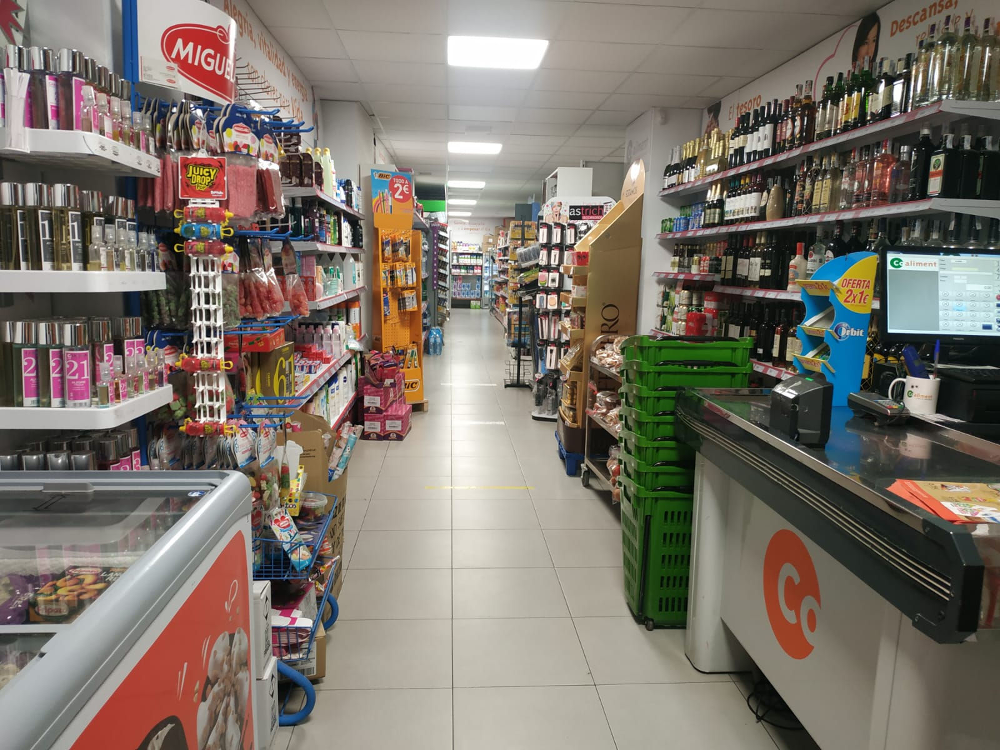
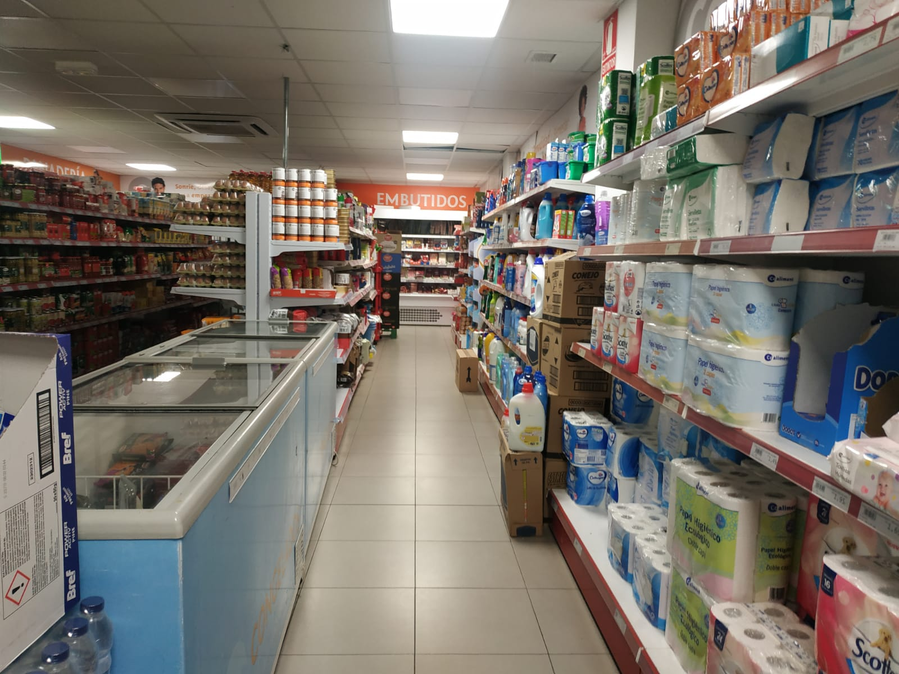
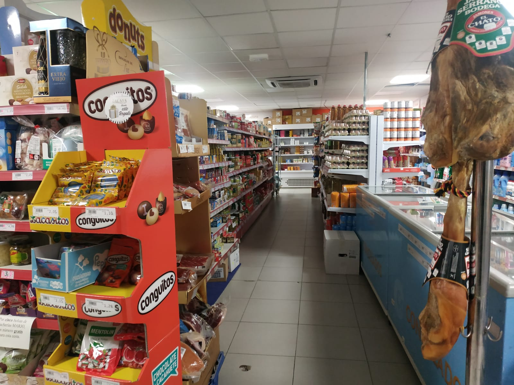

Inicio > Nuestras instalaciones
En esta sección encontrarás información sobre nuestras instalaciones y algunos datos interesantes.
Nuestras instalaciones



Porcentaje de valoraciones
En la siguiente tabla se representa el porcentaje de valoraciones (excelente/buena/aceptable/mala) en el transcurso de los anteriores años. En esa valoración se cuenta la calidad de los productos, el mantenimiento del locál, la actitud
de los trabajadores y los precios de los productos comparados con otras tiendas.
%
valoraciones |
Año |
| 2016 |
2017 |
2018 |
2019 |
2020 |
| Excelente |
5 |
10 |
12 |
14 |
15 |
| Buena |
15 |
25 |
29 |
31 |
29 |
| Aceptable |
70 |
58 |
51 |
49 |
52 |
| Mala |
10 |
7 |
8 |
6 |
4 |
Preguntas frecuentes
-¿Cuál es el logo de coaliment?
-Diferencias entre los componentes químicos de las aguas que vende Coaliment
|
Coaliment |
Lunares |
Font Vella |
Bezoya |
| Bicarbonato |
242 |
289 |
167 |
5 |
| Sulfatos |
21 |
148 |
0 |
| Cloruros |
33 |
62 |
| Calcio |
80 |
90 |
43 |
3 |
| Magnesio |
13 |
34 |
11 |
0 |
| Sodio |
18 |
40 |
12 |
2 |
-¿Qué agua es mejor, entonces?
- Coaliment
- Lunares
- Bezoya
- Font Vella
|